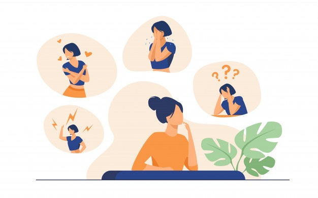

DEFINISI

Mental illness (mental disorder), disebut juga dengan gangguan
mental atau jiwa, adalah kondisi kesehatan yang memengaruhi
pemikiran, perasaan, perilaku, suasana hati, atau kombinasi
diantaranya. Kondisi ini dapat terjadi sesekali atau berlangsung
dalam waktu yang lama (kronis).
Gangguan mental dipengaruhi oleh peristiwa dalam kehidupan yang
meninggalkan dampak yang besar pada kepribadian dan perilaku
seseorang. Peristiwa-peristiwa tersebut dapat berupa kekerasan dalam
rumah tangga, pelecehan anak, atau stres berat jangka panjang.
Jika kesehatan mental terganggu, maka timbul gangguan mental atau
penyakit mental. Gangguan mental dapat mengubah cara seseorang dalam
menangani stres, berhubungan dengan orang lain, membuat pilihan, dan
memicu hasrat untuk menyakiti diri sendiri.
PERUBAHAN PERILAKU

Ini merupakan tanda munculnya penyakit mental pada anak yang
tergolong mudah Anda sadari melalui aktivitas sehari-hari baik di
rumah maupun di sekolah. Ketika anak menjadi lebih sering
bertengkar, cenderung kasar, hingga berkata kasar yang menyakitkan
orang lain padahal sebelumnya tidak, Anda perlu curiga. Tak hanya
itu saja, Anda juga mungkin melihat perubahan perilaku anak
seperti menjadi lebih mudah marah dan merasa frustasi.
PERUBAHAN MOOD

Tanda penyakit mental lainnya adalah mood atau suasana hati anak
yang berubah secara tiba-tiba. Kondisi ini bisa berlangsung
sebentar hingga dalam jangka waktu yang tidak menentu. Tentunya,
hal ini bisa mengakibatkan masalah pada hubungan dengan
keluarga serta teman sebaya. Ini merupakan gejala umum dari
depresi, ADHD, hingga kelainan bipolar.
MENYAKITI DIRI SENDIRI

Perhatikan saat anak sering mengalami kekhawatiran serta rasa
takut berlebih. Perasaan ini dapat berujung pada keinginannya
untuk menyakiti diri sendiri.
Biasanya, ini menjadi akumulasi dari perasaan stres serta
menyalahkan diri sendiri karena gangguan mental juga mengakibatkan
anak sulit mengelola emosi. Ini juga menjadi tanda gangguan mental
pada anak yang perlu Anda cermati karena tidak menutup kemungkinan
berujung pada percobaan bunuh diri.
SKIZOFRENIA
Skizofrenia adalah gangguan mental berat yang dapat memengaruhi
tingkah laku, emosi, dan komunikasi. Penderita skizofrenia bisa
mengalami halusinasi, delusi, kekacauan berpikir, dan perubahan
perilaku. Penyebab skizofrenia belum diketahui secara pasti.
Namun, ada faktor yang diduga dapat meningkatkan terjadinya
skizofrenia, di antaranya faktor genetik dan pengaruh lingkungan.
ATTENTION DEFICIT HYPERACTIVITY DISORDER
ADHD alias Attention-deficit hyperactivity disorder adalah istilah
medis untuk gangguan mental yang ditandai dengan perilaku impulsif
dan hiperaktif. ADHD adalah gangguan yang menyerang anak-anak dan
membuat pengidapnya kesulitan untuk memusatkan perhatian pada satu
hal dalam satu waktu. Kondisi ini memang menyerang anak-anak,
tetapi gejala yang muncul bisa bertahan hingga remaja bahkan
dewasa. Hingga saat ini, penyebab utama ADHD belum diketahui
dengan pasti. Akan tetapi, kondisi ini diduga dipengaruhi oleh
faktor genetik dan lingkungan.
PSIKOSOMATIK
Kata psikosomatik merupakan gabungan dari dua kata, yaitu pikiran
(psyche) dan tubuh (soma). Jika diartikan, gangguan psikosomatik
adalah keluhan fisik yang timbul atau dipengaruhi oleh pikiran
atau emosi, bukannya oleh alasan fisik yang jelas, seperti luka
atau infeksi.
Gangguan psikosomatik dapat terjadi pada semua kelompok usia,
mulai dari anak-anak hingga orang dewasa. Munculnya keluhan
psikosomatik pada seseorang biasanya diawali dari masalah
kesehatan mental yang dialaminya, seperti takut, stres, depresi,
atau cemas.
PSIKOTERAPI
Psikoterapi merupakan terapi bicara yang memberikan media yang
aman untuk pengidap dalam mengungkapkan perasaan dan meminta
saran. Psikiater akan memberikan bantuan dengan membimbing
pengidap dalam mengontrol perasaan. Psikoterapi beserta perawatan
dengan menggunakan obat-obatan merupakan cara yang paling efektif
untuk mengobati penyakit mental. Beberapa contoh psikoterapi,
antara lain cognitive behavioral therapy, exposure therapy,
dialectical behavior therapy, dan sebagainya.
OBAT-OBATAN
Pemberian obat-obatan untuk mengobati penyakit mental umumnya
bertujuan untuk mengubah senyawa kimia otak di otak. Obat-obatan
tersebut berupa golongan selective serotonin reuptake inhibitor
(SSRI), serotonin-norepinephrine reuptake inhibitor (SNRIs), dan
antidepresan trisiklik. Obat-obatan ini umumnya dikombinasikan
dengan psikoterapi untuk hasil pengobatan yang lebih efektif.
SUPPORT GR0UP
Support group umumnya beranggotakan pengidap penyakit mental yang
sejenis atau yang sudah dapat mengendalikan emosinya dengan baik.
Mereka berkumpul untuk berbagi pengalaman dan membimbing satu sama
lain menuju pemulihan.